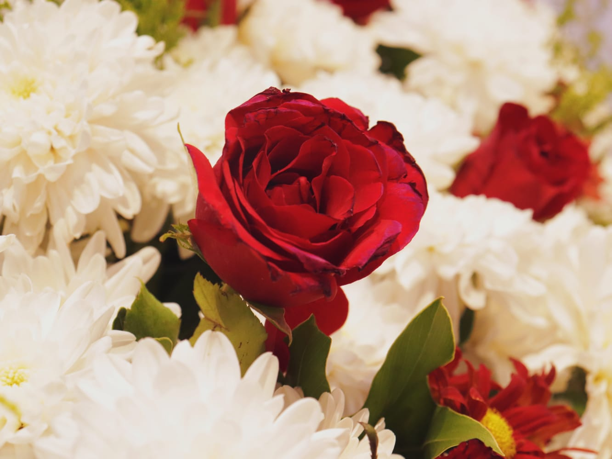
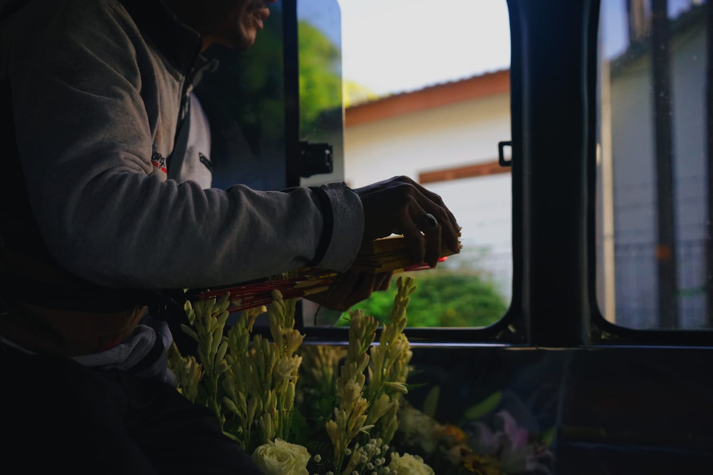
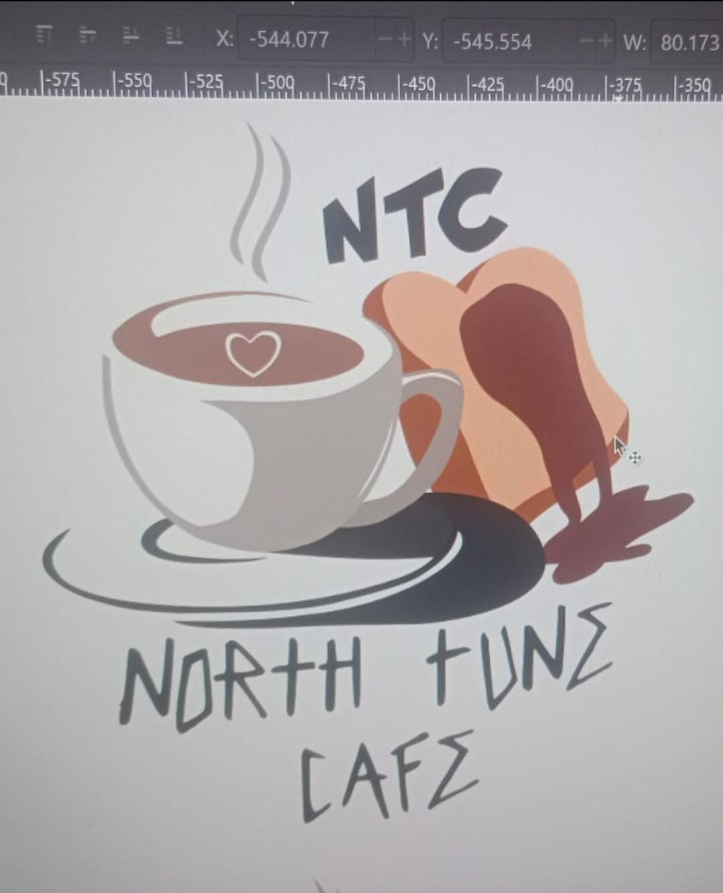
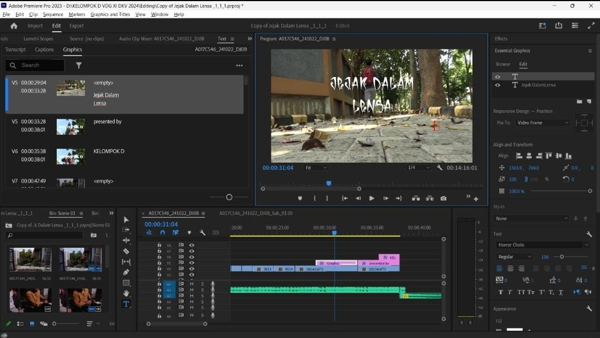
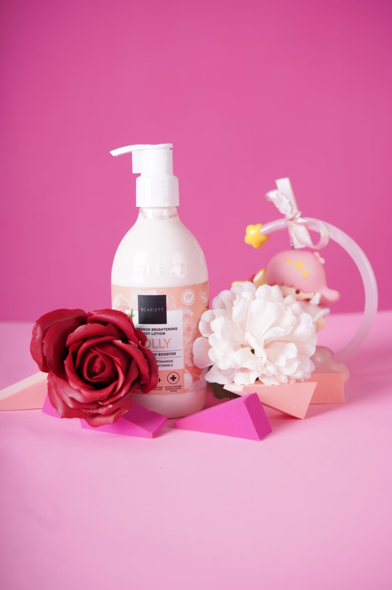
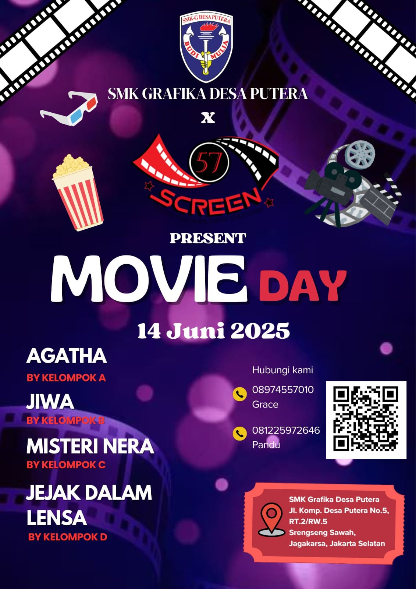
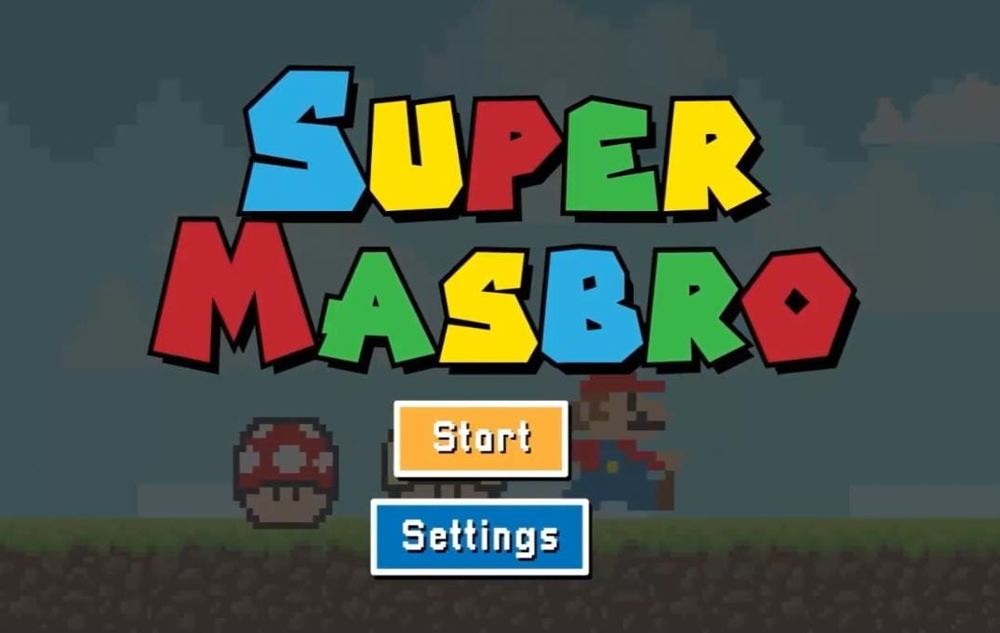

Karya Saya








Saya adalah siswa kelas 12 Desain Komunikasi Visual (DKV) di SMK Grafika Desa Putera. Saya memiliki minat dalam bidang fotografi dan editing visual, dengan fokus pada penciptaan karya yang memiliki suasana, emosi, dan karakter visual yang kuat.
Desain Komunikasi Visual (DKV)
2022 – 2025
rafael.carmelito@gmail.com
0877 8222 2508